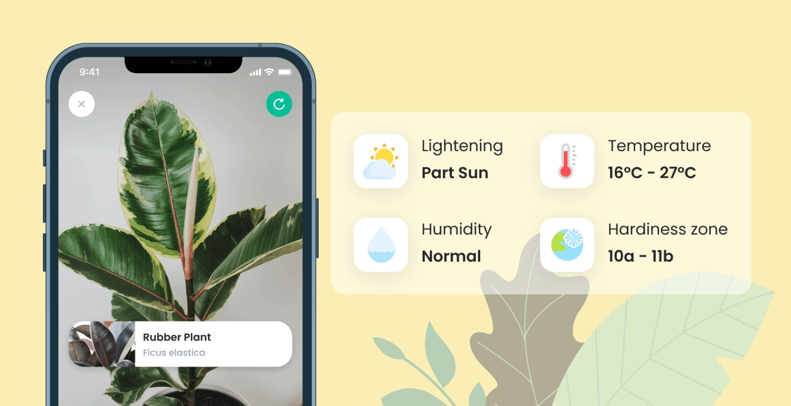
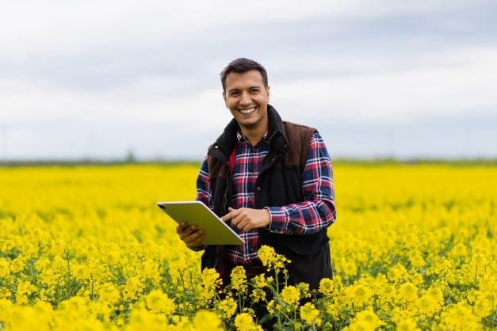
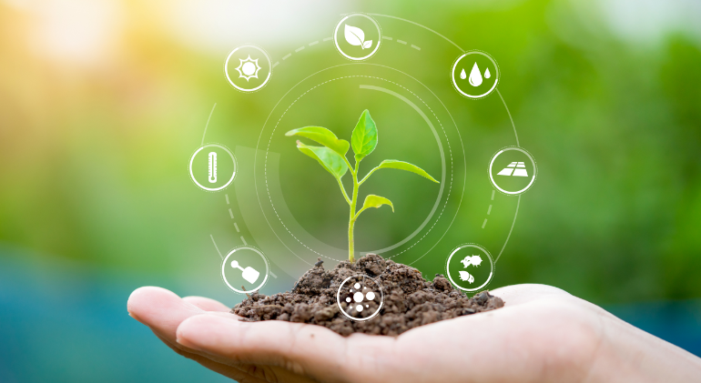

Welcome to AgriDiag
Your trusted partner in modern agriculture
About Us
AgriDiag bridges cutting-edge technology and traditional farming practices to empower farmers and plant enthusiasts worldwide. With our AI-driven diagnostic system, we identify and manage plant diseases with precision, helping crops thrive and ensuring food security.
Our custom-built ML model can recognize over 10,000 crop diseases and conditions with 96% accuracy, offering tailored solutions to safeguard your plants. With expert consultations and actionable insights, we make farming smarter, more sustainable, and accessible for everyone.
Learn and Grow with AgriDiag
We believe in the power of knowledge and innovation. AgriDiag offers an intuitive platform for farmers and hobbyists to learn about crop health and disease management. Access rich guides, real-time diagnostics, and educational content to sharpen your farming skills while nurturing your crops.
Effortless Crop Care
Simply scan your crop with a smartphone, tablet, or laptop to identify diseases instantly. Our platform provides customized treatment plans, nutrient suggestions, and even weather-based farming tips to optimize yields.
Take advantage of light and moisture meters, fertilizer calculators, and pest control strategies to maintain healthy, productive fields.
Expert Guidance Anytime
AgriDiag connects you to a network of certified agricultural experts available 24/7. Whether it's pest outbreaks, soil quality issues, or complex disease patterns, our team is ready to provide personalized advice. With just a few clicks, you can consult with experienced agronomists and botanists who are as invested in your success as you are.
Sustainability and Innovation
At AgriDiag, we champion sustainable farming practices and biodiversity conservation. By leveraging AI, IoT, and AR technologies, we equip you with tools to adapt to climate challenges while minimizing environmental impact. Together, we aim to create a resilient, green future for agriculture.
Join the AgriDiag Community
With users spanning continents, AgriDiag is building a vibrant network of farmers, researchers, and enthusiasts committed to transforming agriculture. By sharing stories, challenges, and successes, we collectively learn, grow, and inspire innovation in farming.

Your Partner for a Greener Tomorrow
At AgriDiag, our mission is clear: to make farming smarter, more efficient, and sustainable. Whether you're managing a small garden or running large-scale operations, AgriDiag is here to support your agricultural journey every step of the way.
Join us in reshaping the future of farming. Let's grow, together.